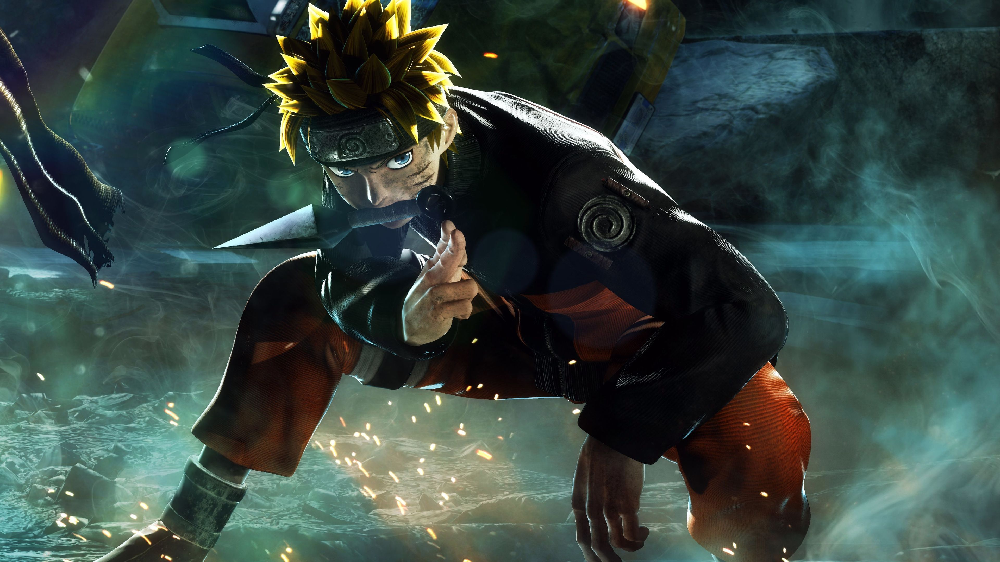
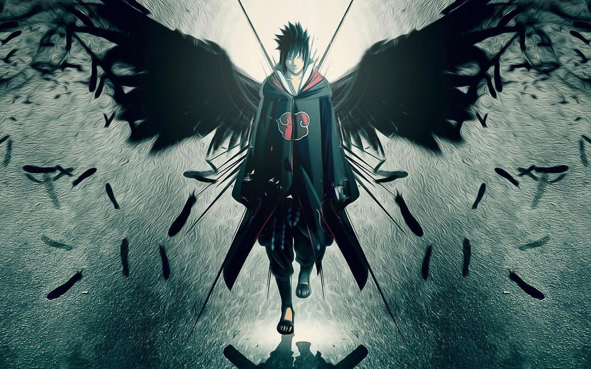
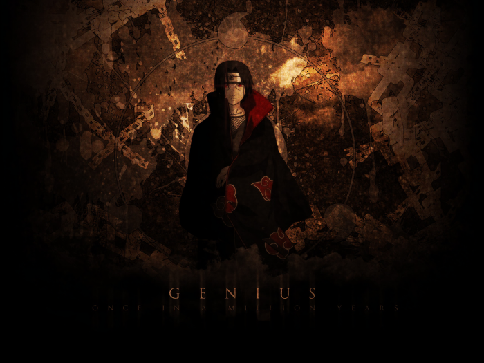
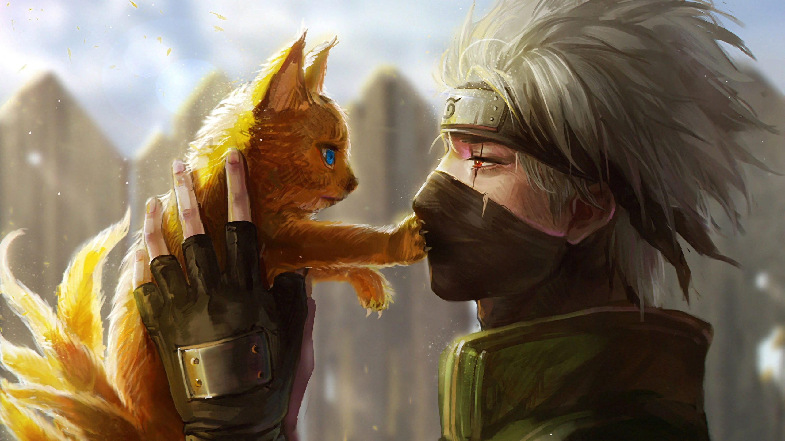
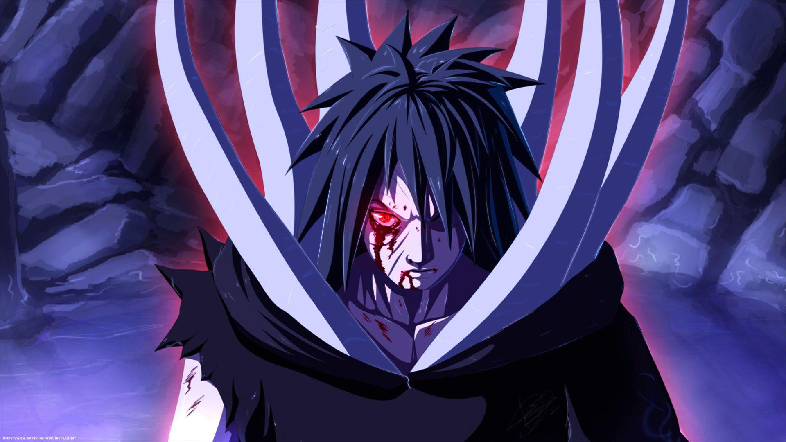
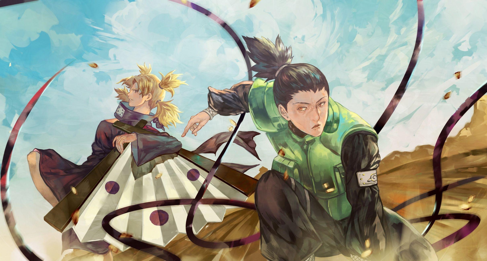
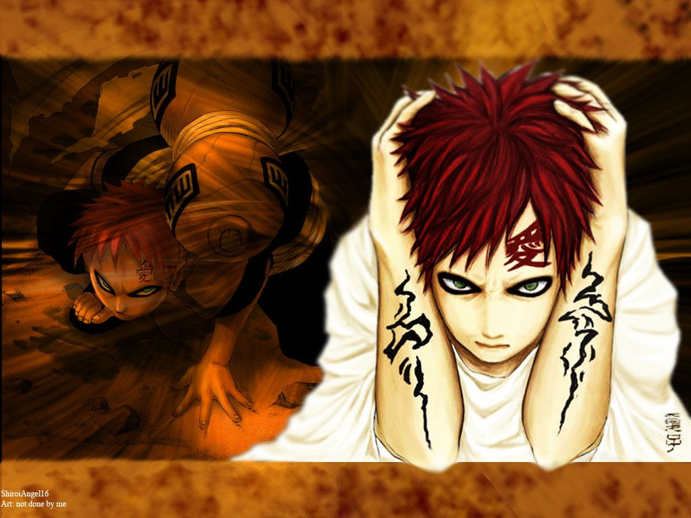
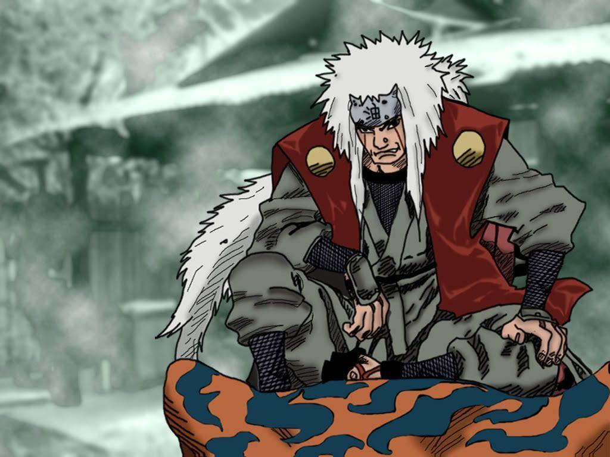
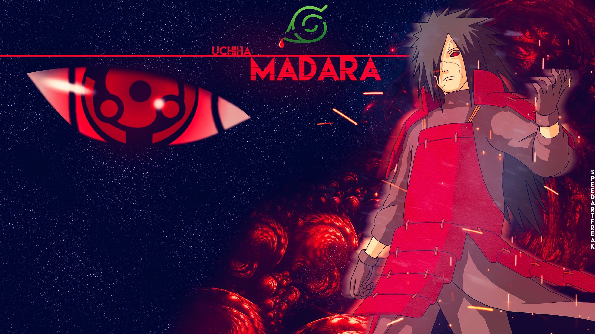
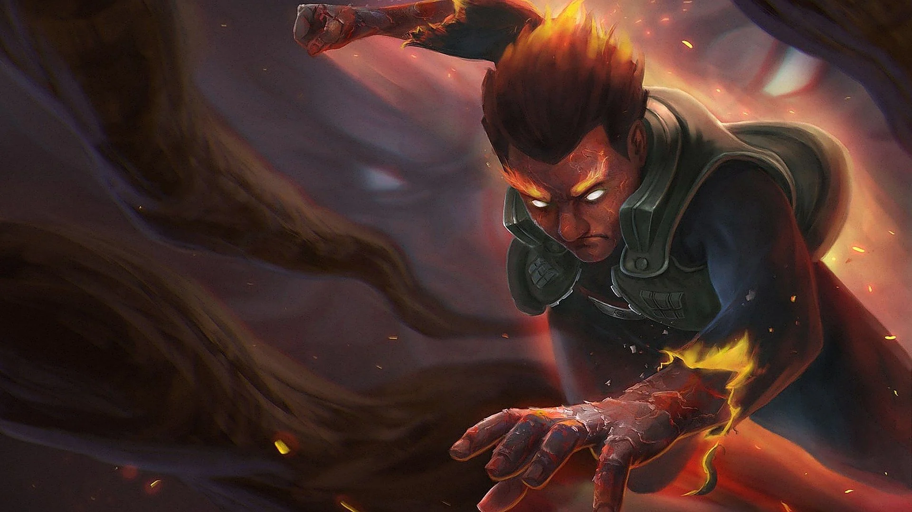

<!DOCTYPE html>
<html>
    <title>Animes List</title>
</html>
<head>
    <body>
        <center>
            <h1 style="color:rgb(0, 0, 0);">ANIMES</h1><hr>
            <h2 ><a href="#Naruto" style="text-decoration:none;">Naruto</a><br>
                <a href="#Sasuke" style="text-decoration:none;">Sasuke</a><br>
                <a href="#Itachi" style="text-decoration:none;">Itachi</a><br>
                <a href="#Kakashi" style="text-decoration:none;">Kakashi</a><br>
                <a href="#Obito" style="text-decoration:none;">Obito</a><br>
                <a href="#Shikamaru" style="text-decoration:none;">Shikamaru</a><br>
                <a href="#Gaara" style="text-decoration:none;">Gaara</a><br>
                <a href="#Jiraiya" style="text-decoration:none;">Jiraiya</a><br>
                <a href="#Madara" style="text-decoration:none;">Madara</a><br>
                <a href="#MightGuy" style="text-decoration:none;">MightGuy</a><br>
                
            </h2>
        </center>
        
            <hr>
            <center><h1 id ="Naruto" ><b>Naruto</b></h1>  
            </center>
            <p>
                It tells the story of Naruto Uzumaki, a young ninja who seeks recognition from his peers and dreams of becoming the Hokage, the leader of his village. The story is told in two parts—the first set in Naruto's pre-teen years, and the second in his teens.Two and a half years later, Naruto returns from his training with Jiraiya. The Akatsuki starts kidnapping the hosts of the powerful Tailed Beasts. Team 7 and other Leaf ninja fight against them and search for their teammate Sasuke. The Akatsuki succeeds in capturing and extracting seven of the Tailed Beasts, killing all the hosts except Gaara, who is now the Kazekage. Meanwhile, Sasuke betrays Orochimaru and faces Itachi to take revenge. After Itachi dies in battle, Sasuke learns from the Akatsuki founder Tobi that Itachi had been ordered by Konoha's superiors to destroy his clan to prevent a coup; he accepted, on the condition that Sasuke would be spared. Devastated by this revelation, Sasuke joins the Akatsuki to destroy Konoha in revenge. As Konoha ninjas defeat several Akatsuki members, the Akatsuki figurehead leader, Nagato, kills Jiraiya and devastates Konoha, but Naruto defeats and redeems him, earning the village's respect and admiration.
            </p>
            <hr>
            <center><h1 id ="Sasuke" ><b>Sasuke</b></h1> 
            
            </center>
            <p>
                Sasuke is one of the few ninjas capable of moving through space and time like this. The ability cast a black portal that allows Sasuke to move through dimensions and then move through time. The ability drains Sasuke of chakra and keeps him from using skills that are of extreme value to him The two both lost an arm when they fought at the Valley of the End. Naruto held back during the fight and refused to actually end Sasuke's life. Still, by the end of the climactic battle, Sasuke admitted defeat. That admittance proves that Naruto is stronger than Sasuke.
            </p>
            <hr>
            <center><h1 id ="Itachi" ><b>Itachi</b></h1>  
            </center>
            <p>
                He sacrificed everything for peace in the village. Once you know his true story you will understand the true meaning of sacrifice. He taught us that sometimes we have to make sacrifices for the greater good.
                Itachi was the first child born to Mikoto and Fugaku Uchiha. His early childhood was marked with violence: when he was four years old, the Third Shinobi World War waged and he witnessed first-hand many of the war's casualties.
            </p>
            <hr>
            <center><h1 id ="Kakashi" ><b>Kakashi</b></h1> 
                
                </center>
                <p>
                    Biography: Kakashi graduated from the Ninja Academy and became a Genin, when he was merely 5 years old, then at 6 years old, became a Chuunin. He later became a Jounin and a member of the AnBu Assasination squad for Hidden Leaf Village. We see him as he takes up the role as being a sensei for the new Chunnins.
                    Kakashi is renowned throughout the Naruto world for the use of his Sharingan, which he received from his teammate Obito Uchiha, and is revered as the ninja who has copied over a thousand jutsus, earning him the moniker "Copy Ninja Kakashi"
                </p>
                <hr>
                <center><h1 id ="Obito" ><b>Obito</b></h1> 
                    
                    </center>
                    <p>
A child living through the Third Great Ninja War, Obito (Kakashi's teammate on Team Minato) wanted to become the Hokage of Konohagakure, and had an unrequited love for his teammate Rin. When he and Kakashi rescue the kidnapped Rin during a mission, Obito's right side is crushed in a landslide
Is Obito Uchiha evil or good?7 Villains Who Should've Remained EvilObito Uchiha is, perhaps, the biggest villain in the world of Naruto. Obito became a villain after witnessing the death of Rin at the hands of Kakashi. Convinced that the world of dreams was the way to go forward, Obito did everything in his power to help Madara achieve his goal.
                    </p> 
                    <hr>
                    <center><h1 id ="Shikamaru" ><b>Shikamaru</b></h1> 
                    </center>
                    <p> 
                        Shikamaru Nara is one of the smartest characters in the anime manga series Naruto. Masashi Kishimoto originally created Shikamaru in order for him to be the only winner of an early Naruto arc: the Chunin Exams, based on his high intelligence.
                        Shikamaru Nara is a lazy genius. He finds many things in life to be annoying or troublesome and is usually foul mouthed. But, deep down, he is a kind person. Not only is he kind, but he is a genius with an IQ of 200 .       
                    </p>
                    <hr>
                    <center><h1 id ="Gaara" ><b>Gaara</b></h1>  
                        </center>
                        <p> 
                            Notable feats for Gaara include defeating Rock Lee, an immensely powerful taijutsu master, despite his use of the five of Eight Inner Gates, nearly killing Sasuke and outmatching him at the Konoha Invasion, despite his mastery of the Sharingan, pressing both Naruto and Gamabunta, a giant and very powerful ninja toad,
He was formerly a villain in the early part of Naruto, being a threat in the Chunnin Exams. He was a misanthrope due to discrimination and isolation he experienced in childhood because the Shukaku, or the One-Tailed Demon sealed inside of him
                        </p>
                        <hr>
                        <center> <h1 id ="Jiraiya" ><b>Jiraiya</b></h1>  
                            </center>
                            <p> 
                                Jiraiya is a ninja who uses shapeshifting magic to morph into a gigantic toad. Heir of the Ogata clan, Jiraiya fell in love with Tsunade, a beautiful young maiden who has mastered slug magic. His arch-enemy was his one-time follower Yashagorō, also known as Orochimaru, a master of serpent magic
                                In Naruto. Jiraiya is a ninja from the village of Konohagakure trained by Hiruzen Sarutobi, the Third Hokage. He becomes known as the "Toad Sage" due to his training under the Great Toad Sage in the field of Senjutsu (仙術, lit. "sage techniques"), enabling him to summon toads as allies during battles
                            </p>
                            <hr>
                            <center><h1 id ="Madara" ><b>Madara</b></h1>  
                                </center>
                                <p> 
                                    Madara is believed to have been killed by Hashirama's hand, but he survives and goes into hiding. He awakens the legendary Eye Technique Rinnegan using Hashirama's DNA. Before dying, Madara takes Obito as his agent and transplants his Rinnegan into Nagato to be preserved for his eventual revival years later
                                    Madara Uchiha (うちはマダラ, Uchiha Madara) was a legendary shinobi and once the famed leader of the Uchiha clan. He had helped in the founding of Konohagakure and was given as the co-founder alongside his rival and best friend,Hashirama Senju, with the two personal intention of beginning an era of peace.
                                </p>
                                <hr>
                                <center><h1 id ="MightGuy" ><b>MightGuy</b></h1>   
                                    </center>
                                    <p> 
                                        Might Guy is one of the main supporting characters in the Naruto anime/manga series and the Boruto: Naruto Next Generations anime/manga series. He is the sensei of team Guy which consists of him, Neji, Tenten, and Lee.
                                        Might Guy was the son of Might Duy who was known as Konoha's Eternal Genin. His father never cared for this title as he was happy enough that people cared enough to know him. Guy's father's optimism was reflected onto him, that they always had youth and could become great Taijutsu masters through diligent training
                                    </p>


</body>
</head>